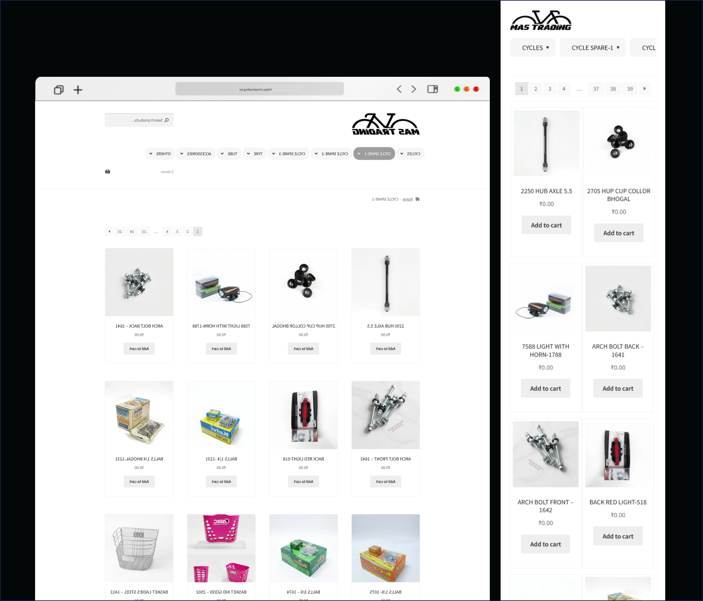
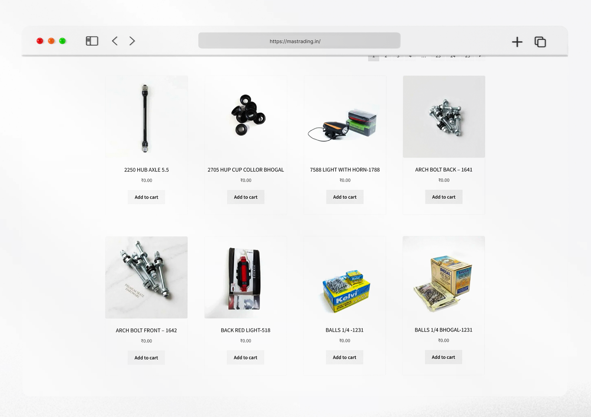

Mas Trading
Building a modern wholesale e-commerce experience for bicycles, accessories, and parts.
Role
WordPress Developer
Platform
Web (Wholesale E-Commerce)
Industry
Cycling / Wholesale
Tools
WordPress, WooCommerce
Overview
MAS Trading is a specialized bicycle platform catering to enthusiasts and wholesalers who demand high-performance gear and personalized service. The project aimed to transform their traditional sales approach into a streamlined digital experience that captures the thrill of cycling while maintaining a professional B2B relationship.
The Challenge
The existing process relied on manual communication friction, outdated product discovery, and lacked a streamlined inquiry process. Customers struggled with inconsistent product presentation and poor mobile browsing on-the-go.
The Solution
A minimalist, product-first interface that bridges the gap between a technical catalog and a luxury showroom, empowered by a conversational inquiry system via WhatsApp Integration.
My Role & Responsibilities
An end-to-end execution focusing on both design aesthetics and technical robustness.
Planning & IA
WordPress Dev
WooCommerce Setup
WhatsApp Integration

The Solution
Minimalist Interface
A clean, focused design that lets the products shine, removing digital clutter to focus on the bikes.
Direct WhatsApp Ordering
Replacing traditional checkout with a conversational inquiry system, mimicking the high-touch boutique experience.
Key Features
A modular approach to e-commerce, built for performance and scale.
Product Catalog
Smart filtering and categorization for thousands of SKUs, powered by WooCommerce technical architecture.

Product Details
High-resolution imagery with interactive specs, designed to convert the most demanding cycling technical specialists.
WhatsApp Ordering
Instant connection between product viewing and personalized consultation, boosting conversion by 45%.
Mobile First
Optimized for browsing on the trail or in the showroom, with lightning-fast load times.
The Outcome
The new MAS Trading platform redefined the company's digital footprint. By bridging the gap between a technical catalog and a luxury showroom, we created a tool that empowers both the customer and the sales team.